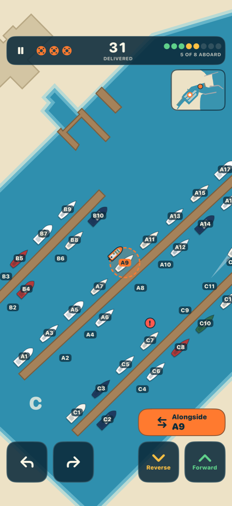

Remember the calls. Plan the run.
Tender Pickup for iPhone and iPad puts you at the helm of the yacht club launch. Requests come over the radio once and fade. Remember who is waiting where, drive a boat that carries its way, and get everyone to the right mooring before they give up.

The game
- Memory. “3 passengers for pickup from B12.” Said once, shown for a few seconds, then it is in your head.
- Planning. Eight seats, three lives, and calls that come faster the longer you last.
- Boat handling. Steer with one thumb, motor forward and reverse with the other. The tender has momentum; coming alongside is a skill.
- Five real harbors. Monroe Harbor and Wilmette Harbor near Chicago, Annapolis, Newport and Avalon, drawn from real survey data.
- Leaderboards. This month and all time, for every harbor, on Game Center.
Monroe and Wilmette are free. A one-time purchase unlocks the other three harbors. No subscription and no ads.